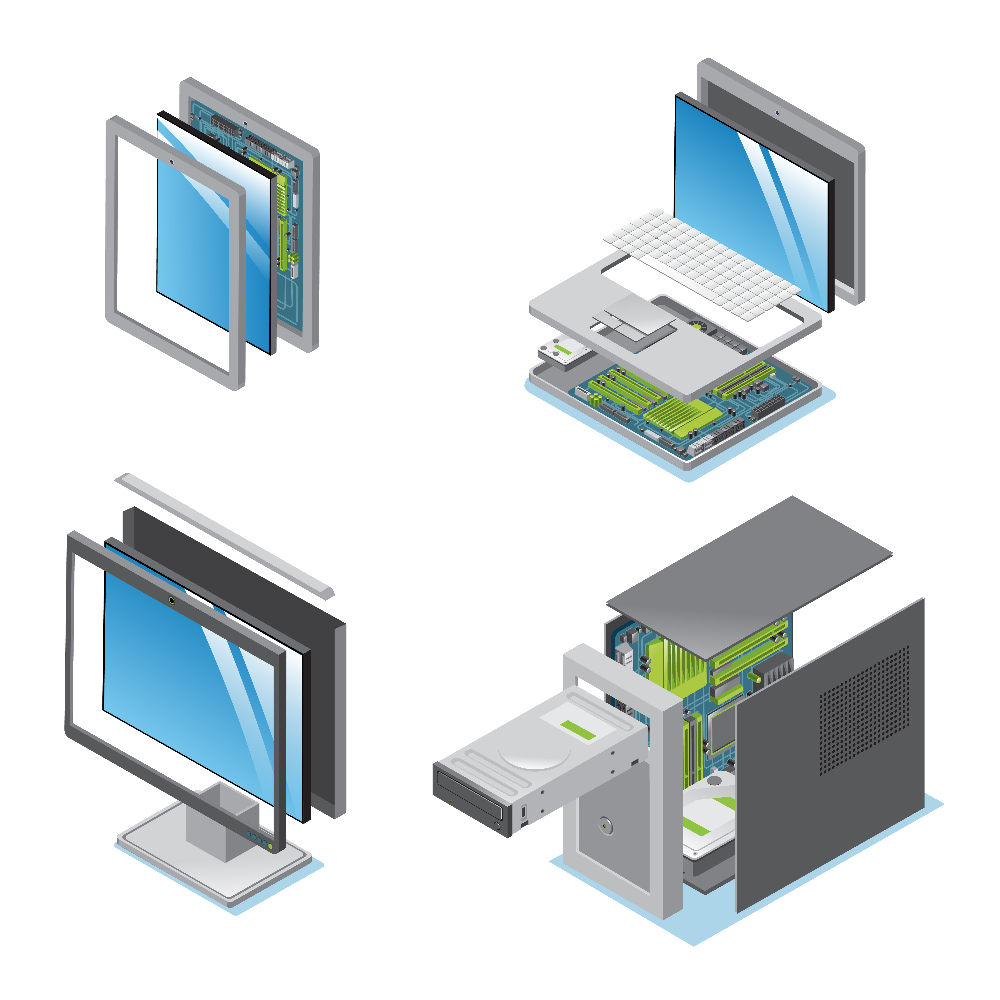

Datos Personales
Nombre: Mauricio Santiago De Luis
Edad:16 años
Boleta:2020090854
Correo: Santiagodeluismauricio@gmail.com
Estudios

- Secundaria "Rafael Molina Betancourt"
- Bachllerato "CECyT 9 Juan De Dios Bátiz"
Habilidades
Soy una persona que le apasiona la tecnología que busca realizar Software de calidad y mis habilidades son las siguientes:
- Gusto por la tecnología
- Capacidad de resolver problemas
- Capacidades logicas
- Creatividad
- Honestidad
- Trabajo en equipo
Hobbies

En mis tiempos de descanso me gusta aprender del funcionamiento de las cosas, jugar videojuegos y conocer gente en linea Ver más